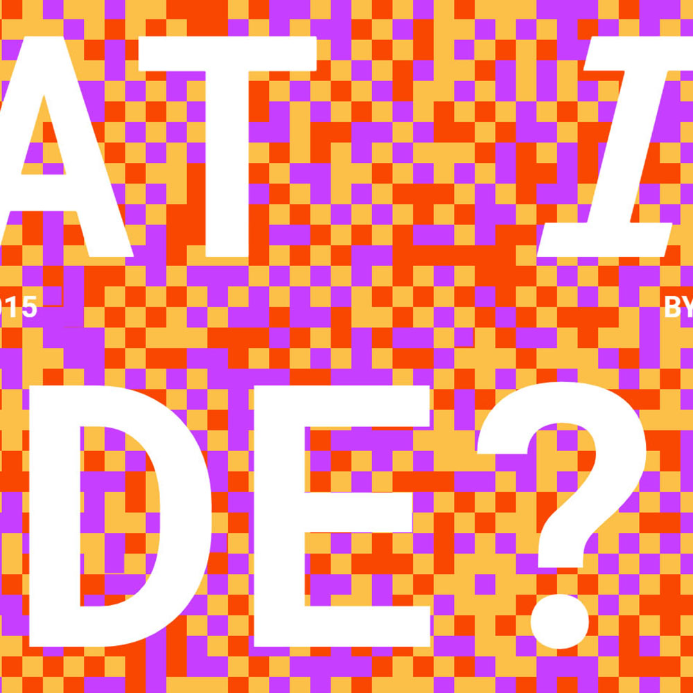
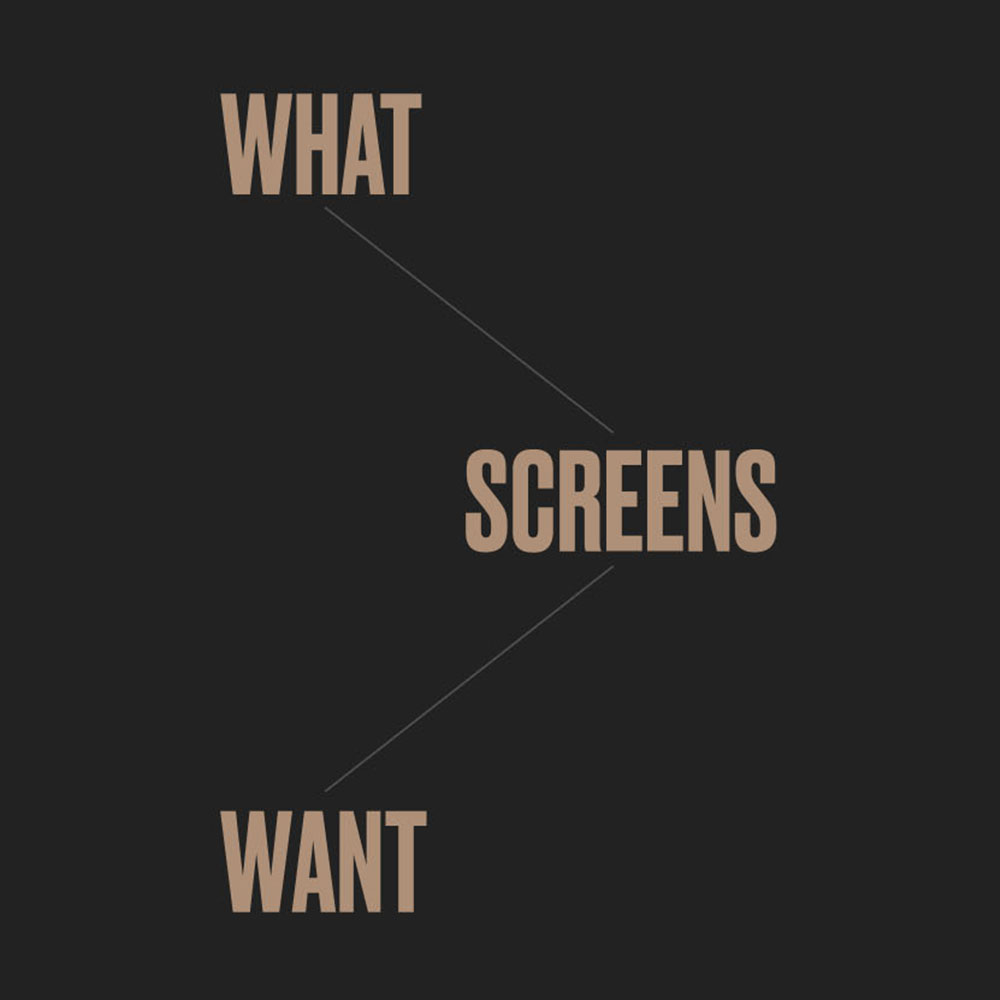
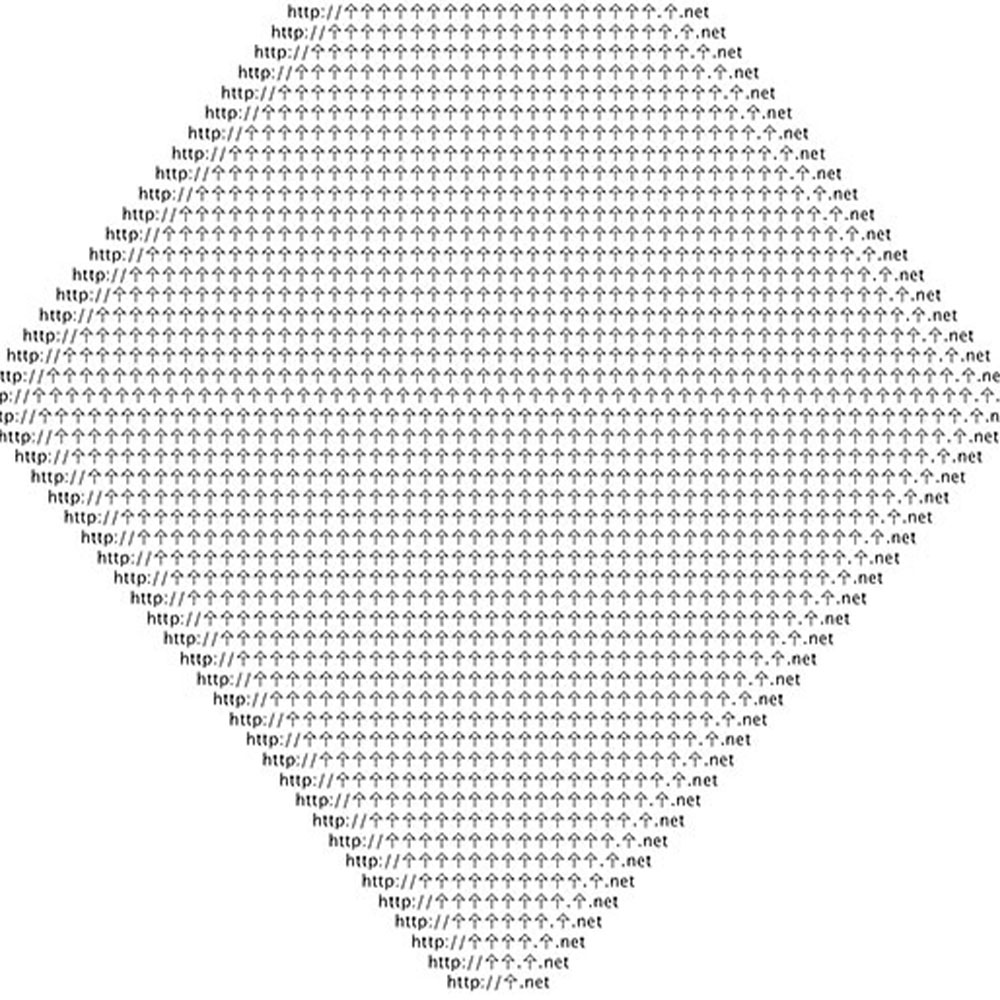
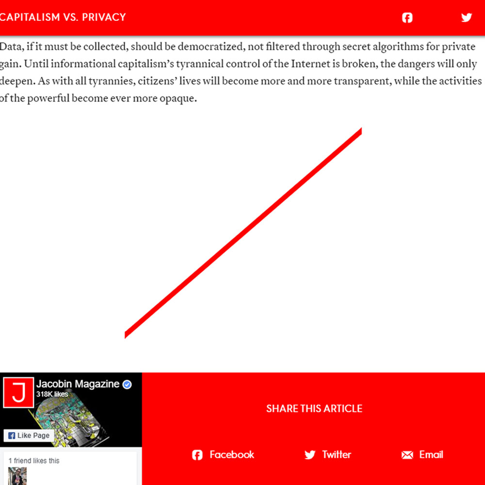
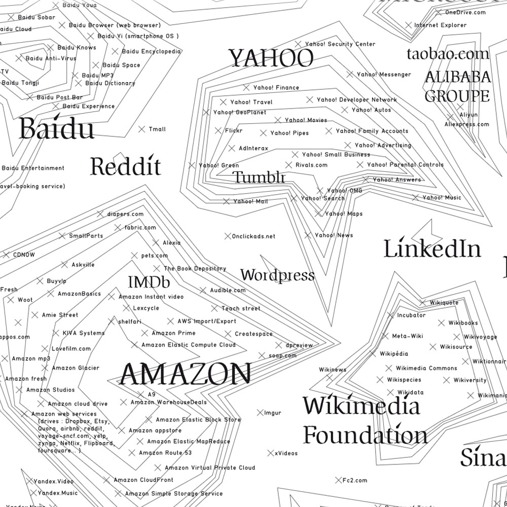
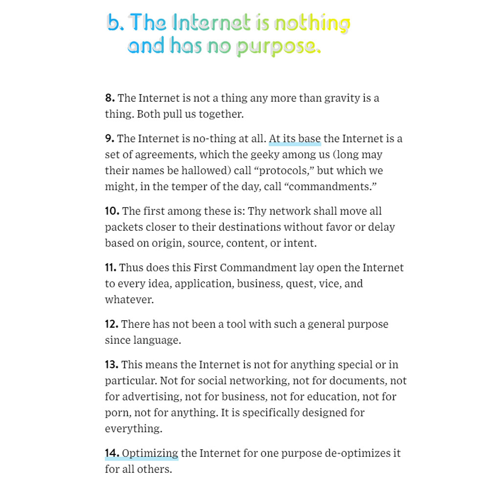

-

WHAT IS CODE
"This article provided me with a very detailed and valuable lesson on the fundamental science and logic behind code and how code and coding culture developed to where it is today. It clarifies most of the coding jargons and gives examples of many current competing computer languages and how different they are but yet still cooperating in certain aspects. One of the interesting Ideas I take from the article is that the “Python”, a newer but slower language when compares to Java, might still work better to solve the certain problem because of its integration of old C languages with clear comprehensive structure. I personally also like how the author uses his own coding on the website to engage interaction with the readers to promote a fun interactive way of learning."
READ ARTICLE
-

WHAT SCREENS WHAT
"I think this article poses interesting questions about the future of web design by referring to the website as the window of the techies’ thoughts. I was intrigued by the analogy of the map being distorted by cultural social and political reference points. I feel the argument between the 2D and Skeuomorphic web design is well closed by the point that “screen is neutral”. I agree with this conclusion, I see the screen as a tool to convey ideas, it should not define how the ideas or the aesthetics are related."
READ ARTICLE
-
VERNACULAR WEB
"It makes me nostalgic by reading the article. Being in the generation of internet, I have seen how much the internet has been developing and changing both in the infrastructure and the aesthetic. It's a little sad to know the old websites are buried in the search engine graveyard because of being obsolete and how the new internet sort of setting up too many templates to limit the freedom that the Internet is supposed to have. However, I am still glad how the Internet developed to today's status. The only question is, what is the true value of a vernacular web when it not about ancestry or nostalgia."
READ ARTICLE
-

JODI'S INFRASCTRUCTURE
"Jodi's infrastructure is a technical and inspiring website. The introduction of Unicode leads to an infinite possibility of the internet, yet hard to understand by the people who don't use that language. This article addresses the connection the technology and art, which is not subservient to the other. I like how the author describes that the beauty of code comes not from function and elegance but just medium which depicts a mundane reality."
READ ARTICLE
-

CAPITALISM VS PRIVACY
"I have always been warned of don’t post any secrets on the internet. This article has double-approved that warning. It's very concerning that the big tech companies keep using personal data for profits without considering the users' will. The article is very insightful in predicting possible hazardous outcomes based on historical examples and the bad things that are happening now. I totally agree with the idea that “Data, if it must be collected, should be democratized.” All in all, it’s convincing that the growing user data transparency for private gain will definitely need a revolution, but I can’t help pessimistically wonder when will that day come."
READ ARTICLE
-

CRITICAL ATLAS OF INTERNET
"This reading does a good job on explaining abstract internet ideas through diagram and graphics, although some of those a little bit repetitive and weirdly presented. Through the systematical description, the reading depicts a comprehensive image of the internet, which is extremely powerful in good ways and bad ways. I like how the author is being objective and creative in judging the internet. I personally think this article would be a great reading if the website design, like the font and the image layout, would be more readable and simple."
READ ARTICLE
-

NEW CLUES
"I like how the article covers various topics about the Internet and has strong clear straight-forward opinions on each topic. A lot of those opinions are identifying the Internet as an innocent cold machine, and we, as the internet user, are the ones that create all kinds of issues that the Internet carries. So instead of new clues, I felt this article is more like "new rules" for Internet users, which includes people, tech companies, government, Internet service providers, etc. Although I don't how many readers can remain open-minded to these "rules", this article does have good logic and evidence with its strict commanding tone. Along with all the annoying ads on the web and the weirdly colored title font, it's kind of an irony."
READ ARTICLE